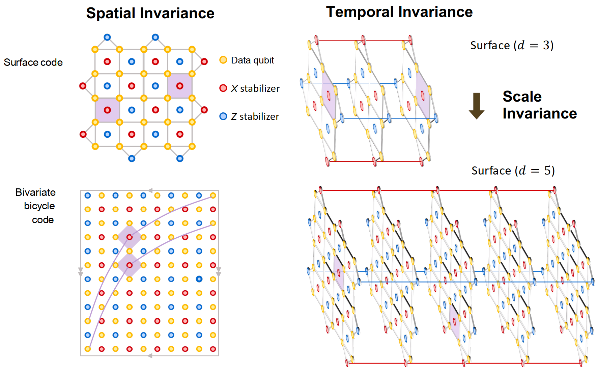
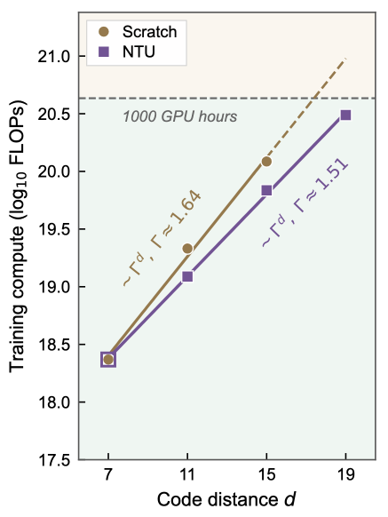
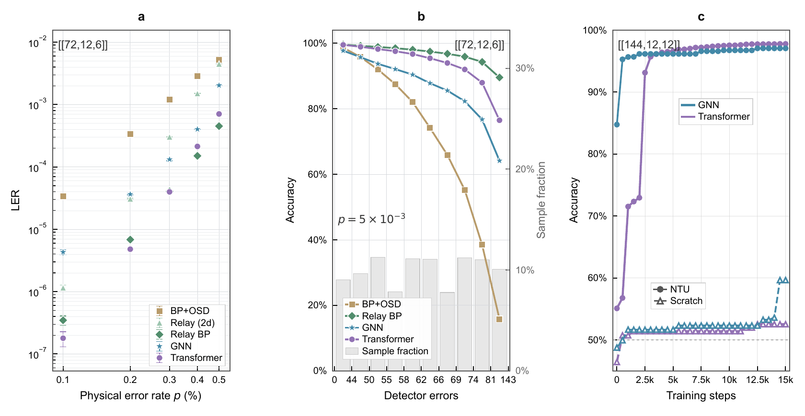
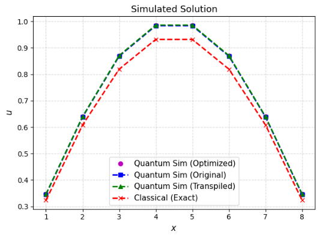

动态
- [2026.06]论文《Efficient Foundation Decoders for Fault-Tolerant Quantum Computing》预印本发布（arXiv:2606.27119）。
- [2026.01]加入与南洋理工大学合作的量子纠错解码项目，参与神经解码器研究。
- [2025.12]获 2025 年度致远荣誉奖学金、本科生优秀奖学金。
- [2025.11]获“挑战杯”揭榜挂帅擂台赛新一代信息技术领域一等奖。
- [2025.10]获 2024–2025 年度三好学生。
近期博文
- [2026.09]复赛小记（上）
教育经历
上海交通大学 — 人工智能（拔尖英才试点班） 本科
成绩截至 2025–2026 学年夏季学期（大二学年结束）。
科研经历
基于 Transfer Learning 的量子纠错解码器
围绕容错量子计算中的 Surface Code 解码问题，提出 Neural Transfer Unification（NTU）迁移学习框架：利用结构化码族的代数尺度不变性，将小距离码上学到的错误知识直接迁移到大规模容错码，消除神经解码器的 cold-start 问题。NTU-Transformer 在电路级噪声下精度与 SOTA 相关 PyMatching 基线相当，并可迁移至 BB qLDPC 码。同时主导 Surface Code Decoder 全 distance 训练，大幅节约 GPU hours 与计算成本。







面向量子优越性的线路智能编译与蒸馏
参与面向 NISQ 量子硬件的线路智能编译与优化，负责线路结构复杂度分析与非局域性度量设计；参与基于 cpflow 的酉矩阵综合实验（门数 6378 → 58）与真机实验。项目获“挑战杯”揭榜挂帅擂台赛一等奖。
论文
Efficient Foundation Decoders for Fault-Tolerant Quantum Computing
arXiv:2606.27119 · Preprint · 2026
研究兴趣
- 人工智能基础架构 — Transformer 架构、预训练与微调、迁移学习、高效训练和推理优化
- 量子计算 × 人工智能 — 量子机器学习、量子神经网络等交叉方向
- 大模型 × 科学计算 — 大模型在科学计算、复杂系统建模和智能优化任务中的应用
所获荣誉
- 2026 年芜湖市夏季国际象棋等级赛（公开组）第三名2026.08
- 2026 年上海交通大学“体总杯”国际象棋项目 团体第四名2026.05
- 2026 年芜湖市春季国际象棋等级赛（公开组）第三名2026.02
- 2025年度致远荣誉奖学金2025.12
- 本科生优秀奖学金2025.12
- “挑战杯”揭榜挂帅擂台赛 新一代信息技术领域 一等奖2025.11
- 2024—2025 年度三好学生2025.10
- 2024年度致远荣誉奖学金2024.12
- 第 40 届全国中学生物理竞赛 全国二等奖2023.10